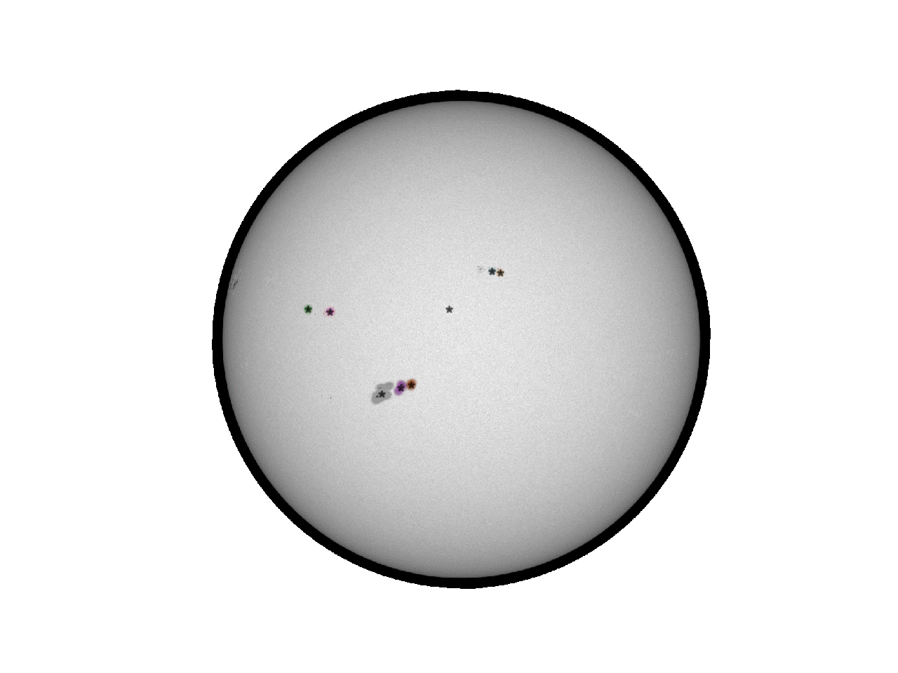
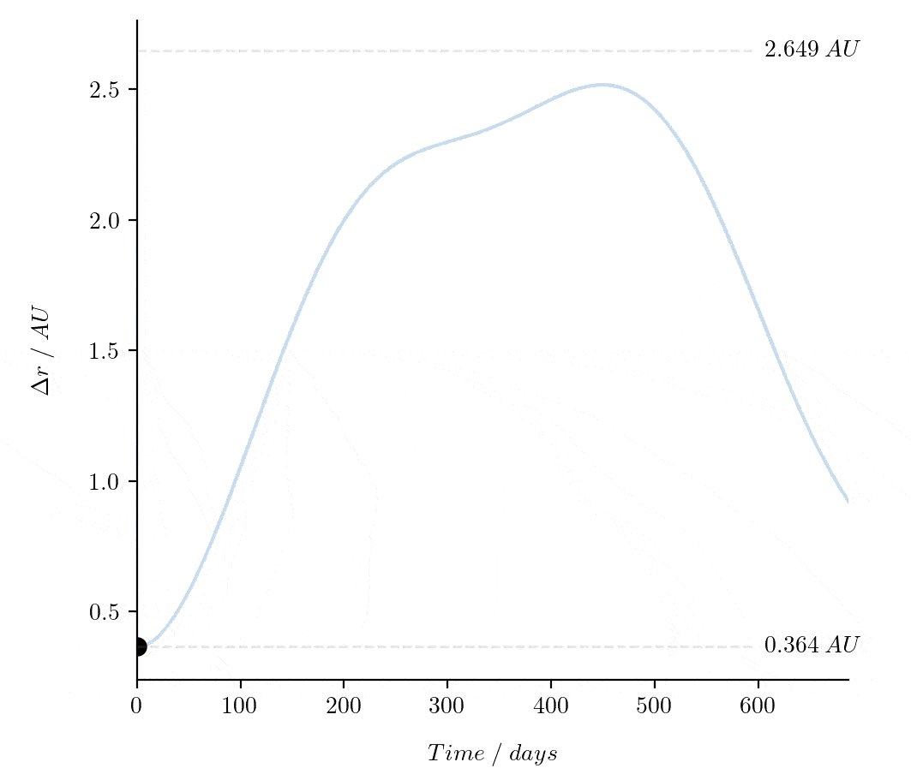

Seasonal Astronomy and Python related challenges. If you complete a challenge be sure to share your code with everyone!
As of the 2022 Maintenance Update 1 challenges will no longer be issued and they will be archived in the GitHub repo. I will be working on a more meaningful way to engage the community where the engagement and wider impact can be measured.
Past challenges are archived below. Some of my solutions can be found on GitHub.
Challenge: Create and submit a plot to Astro Plot of the Week on Twitter @PlotAstro.
As per Astro Plot of the Weeks instructions you can submit a plot/graph/diagram by sharing the link with them on Twitter. Be sure to share your code as well! Looking for inspiration or data? Check out these astronomical data sources by the Smithsonian Astrophysical Observatory.
Challenge: Calculate possible launch windows to Mars using a Hohmann Orbit.
If you are a student check out the special activity linked to this challenge on the A&P JupyterHub. You can find loads of great videos about orbital mechanics on Alfonzo Gonzalez's YouTube channel here.
Challenge: Earth has one Moon, Mars two, and Tatooine three! If Mars and Tatooine had oceans of water on them what would the tides be like?
Start by simulating the tides of the Earth - Moon system then move onto Mars! If you want to stretch to three moons/Tatooine then you will have to make up values for distances etc of the moons.
This diagram shows the tidal acceleration on Mars from Deimos and Phobos.
Challenge: How much older would you be if you stayed on Earth instead of travelling to Alpha Centauri at a) warp 5? or b) sublight speed?
Challenge: Create a program to track sunspots across the face of the Sun automatically. You may use any python modules. I suggest using SunPy for retrieving images of the Sun. How can you use your tracking code to calculate the rotation period of the sun?
My attempt at this is in the AstPy-6 activity (no peeking!). I will be making a few changes that are nagging me over the summer before I post my solution.
Challenge: Calculate the time between when a planet is at its closest to the Earth and when a planet is at its furthest from the Earth.
This gif shows the distance between the Earth and Mars over one orbit of Mars assuming they start at their closest approach. The maximum separation between the Earth and Mars is shown as 2.649 AU. How long will it take for the two planets to reach that maximum separation of 2.649 AU? You may use astropy's units module but no other astronomy related python package.